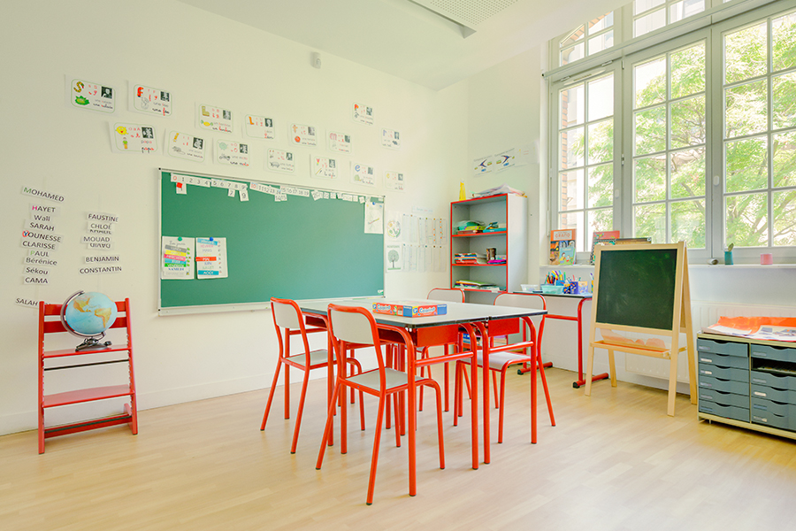

L'association a été créée le 7 février 1969 par Monsieur le Sénateur Jean Chérioux. Il a été son Président jusqu’en 2016.


 01.44.10.81.20.
01.44.10.81.20.
L'association a été créée le 7 février 1969 par Monsieur le Sénateur Jean Chérioux. Il a été son Président jusqu’en 2016.
La Protection Sociale de Vaugirard s'occupe d'établissements qui accompagnent les enfants, adolescents et adultes handicapés mentaux.

L’Association La Protection Sociale de Vaugirard – Jean Chérioux dispose de 11 établissements médico-sociaux à Paris et dans les Hauts de Seine.
Le CAJ a pour mission d’accueillir en journée 37 adultes (femmes et hommes) et de favoriser l’épanouissement de la personne, de développer et de maintenir des acquis, d’accompagner les personnes dans leur parcours.
L’IME accueille 60 enfants, adolescents et jeunes adultes âgés de 3 à 20 ans, des deux sexes, porteurs de déficience intellectuelle moyenne ou profonde pouvant s’associer à des troubles de la personnalité, en semi-internat (repas du midi).
L’ESAT de la Protection Sociale de Vaugirard – Jean Chérioux a ouvert ses portes en 1971. L'établissement accueille des adultes de 20 à 60 ans présentant des déficiences intellectuelles pour travailler.